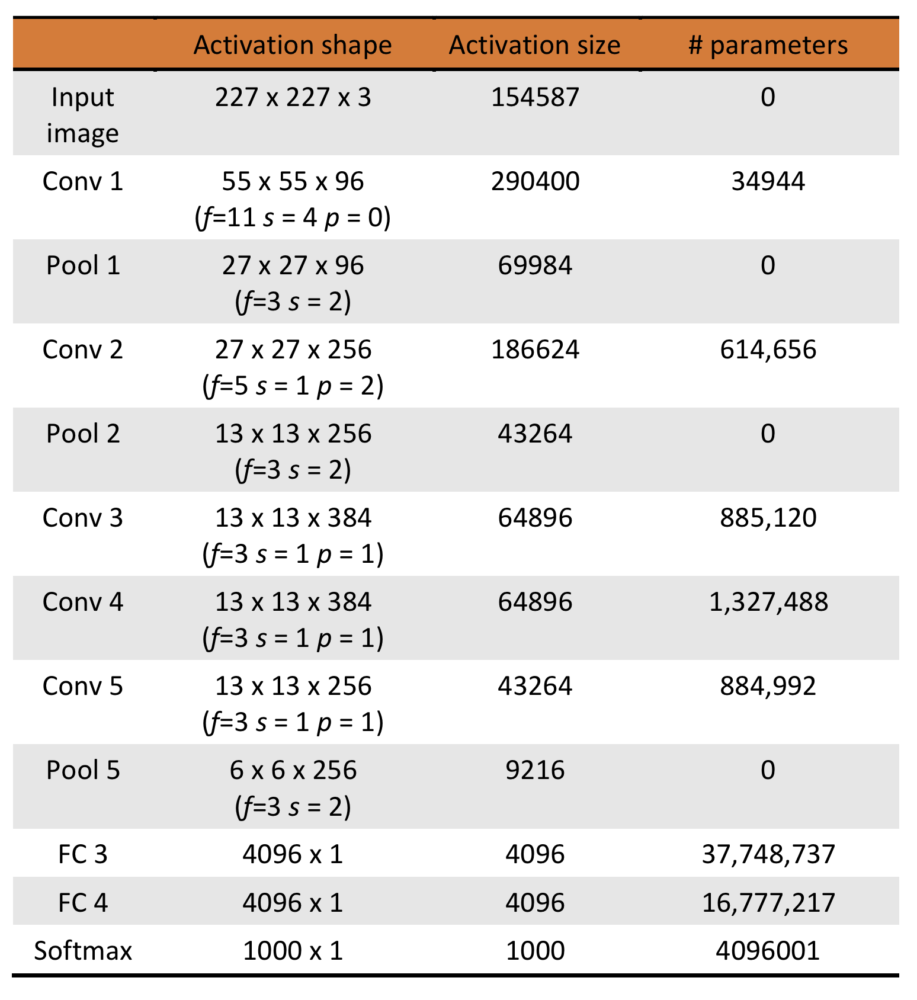

Large-scale image recognition: AlexNet
Source:
original paper
by Alex Krizhevsky, Ilya Sutskever, and Geoffrey Hinton (2012)
AlexNet refers to an eight-layer
convolutional neural network (ConvNet) that was the winner of the
ILSVRC
(ImageNet Large Scale Visual Recognition Competition), the Blackpool for image classification, in 2012,
consisting of 5 convolutional layers, 3 fully connected layers with a final 1000-way softmax,
amounting to a total of 60 million parameters.
The scale of this network was considered very impressive at the time, and was in part possible
thanks to the highly optimized implementation of 2D convolution on GPUs.
The network took 5-6 days to be trained on 1.2 million images using
2 GTX 580 3GB GPUs, and the authors believed that improvement is possible with simply faster GPUs and bigger
datasets. At the time, the model was parallelized such that the GPUs communicate only in certain layers, which
consequently lowered their error rates by 1–2%.
ReLU (instead of \(tanh\)) activation function was used to speed up learning.
Dropout regularization was used to reduce overfitting in the fully connected layers.
Data augmentation was used to artificially increase the size of the dataset and as a result reduce overfitting.
This was done either through image translations and horizontal reflections by
extracting random patches and their horizontal reflections from the resized images,
or through altering the intensities of the RGB channels in training images.
The paper reported results, including top-1 and top-5 error rates, on the ILSVRC-2010
and ILSVRC-2012 dataset.
The model
The images from the dataset are resized to be \(256 \times 256\), non-squared images are cropped first.
The RGB values for each pixels are normalized using the mean of the training set.
The architechture of the model is shown below.

As mentioned previously, data augmentation was used to artificially enlarge the size
of the data set. One form of data augmentation used in the model was done by extracting
random \(224\times 224\times 3\) patches from the \(256\times 256\) images.
These patches then go through 5 convolutional layers and 3 fully connected layers.
Notice that there is likely a mistake here in the paper and the patches' dimensions
should be \(227\times 227\times 3\), as pointed out by Andrew Ng and others.
- 1st convolutional layer: 96 kernels
of size \(11\times 11\times 3\) and a stride of 4 pixels, followed by
a max pooling layer of size \(3\times 3\) and a stride of 2.
Dimensions of the output are \(55\times 55\times 96\) after Conv 1,
and \(27\times 27\times 96\) after Pool 1.
- 2nd convolutional layer: same convolution with 256 kernels of size
\(5\times 5\times 96\) and a stride of 1, followed by a max pooling layer
of size \(3\times 3\) and a stride of 2.
Dimensions of the output are \(27\times 27\times 256\) after Conv 2 (\(p=2)\),
and \(13\times 13\times 256\) after Pool 2.
- 3rd convolutional layer: same convolution with 384 kernels of size
\(3\times 3\times 256\), and a stride of 1, no pooling.
Dimensions of the output are \(13\times 13\times 384\) after Conv 3 (\(p=1)\).
- 4th convolutional layer: same convolution again with 384 kernels
of size \(3\times 3\times 384\), and a stride of 1, no pooling.
Dimensions of the output are \(13\times 13\times 384\) after Conv 4 (\(p=1)\).
- 5th convolutional layer: same convolution again with 256 kernels
of size \(3\times 3\times 384\) and a stride of 1, followed by
a max pooling layer of size \(3\times 3\) and a stride of 2.
Dimensions of the output are \(13\times 13\times 256\) after Conv 5 (\(p=1)\),
and \(6\times 6\times 256\) after Pool 5.
- 6th and 7th layers are fully connected layers, each has 4096 neurons
- 8th and also last layer is a 1000-way softmax.
The activation shapes and sizes as well as the number of parameters for each layer
are tabulated below. The total number of parameters is calculated to be 62,369,155.

The model was trained using stochastic gradient descent with momentum on
mini-batches size 128 examples. The values for momentum parameter used was 0.9 and
a weight decay of 0.0005.
$$ v_{i+1} := 0.9v_i - 0.0005\times\epsilon\times w_i
- \epsilon\times\langle\frac{\partial L}{\partial w}|_{w_i}\rangle_{D_i}$$
$$ w_{i+1} := w_i + v_{i+1}$$
where \(i\) is the iteration index, \(v\) is the momentum variable (velocity),
\(\epsilon\) is the learning rate, which is the same for all layers and was
adjusted manually throughout training based on how the validation error improved,
starting at 0.01.
The weights \(w\) were initialized from a zero-mean Gaussian distribution
with standard deviation 0.01.
\(\langle\frac{\partial L}{\partial w}|_{w_i}\rangle_{D_i}\) is the
average over the \(i\)th batch \(D_i\) of the derivative of the loss function
with respect to \(w\) evaluated at \(w_i\).
The biases were initialized to 1 in the 2nd, 4th, and 5th convolutional layers as well
as the fully connected layers in order to accelerate the early stages
of learning by providing the ReLUs with positive inputs.
The biases in other layers were initialized to 0.